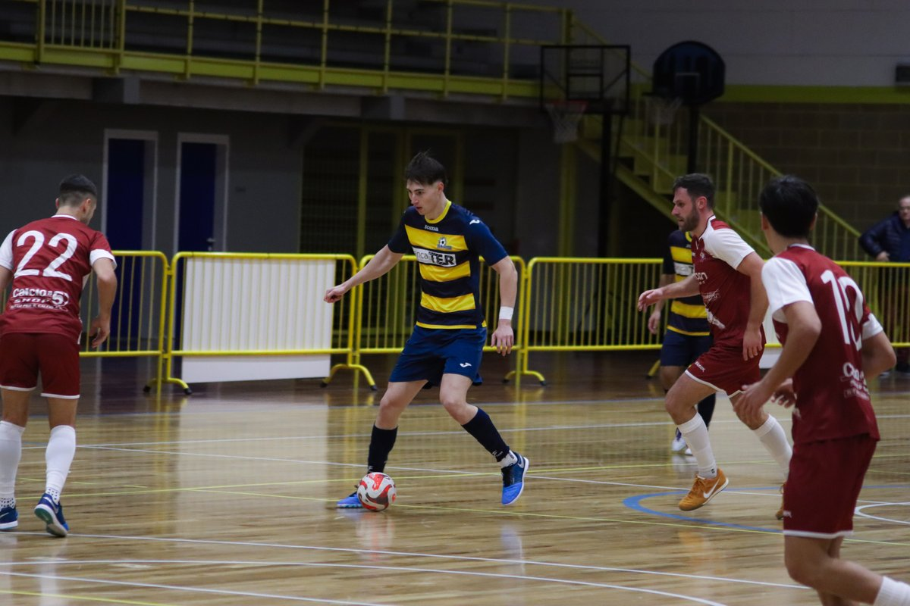

Prova gagliarda dei seggiolai che forse potevano sperare in qualcosa di più. Guardando il bicchiere mezzo pieno resta un 2-2 arpionato a 2’ dalla fine
Il Manzano inizia il campionato con un pareggio. Un 2-2 che probabilmente non lascia soddisfatta nessuna delle due compagini. Manzano che per più tratti della gara era riuscito a chiudere il Belluno confezionando buone occasioni. Ospiti autori di una rapida rimonta e che hanno visto sfumare il successo a 2’ dalla fine. Rimane una partita giocata a ritmi non altissimi, dove comunque non sono mancate giocate di categoria.
Vantaggio Manzano nel finale di primo tempo con Leonardo De Giorgio. Il Belluno rimonta a metà della ripresa grazie alla doppietta lampo di Orsi. Definitivo 2-2 a firma di Fusco in ripartenza.
PRIMO TEMPO – Avvio di partita col Belluno più pericoloso, Lambarki riesce ad arrivare dalle parti di Pozzatello ma viene chiuso dal portiere. È poi il Manzano a prendere coraggio: i seggiolai contengono bene i veneti e imbastiscono le prime occasioni da gol. Klejdi Zharri pesca De Bernardo chiuso dal portiere Lecis. Poco dopo Salah si avventa su un pallone volante, sfera che schizza all’indietro verso De Bernardo che ci prova di prima intenzione, gran parata di Lecis.
Manzano più in palla mentre il Belluno cerca di abbassare i ritmi con capitan Reolon che detta i tempi da dietro, mentre i pericoli offensivi passano tutti dall’ottimo pivot Lambarki. Buon occasione ospite anche su un calcio di punizione, deviato provvidenzialmente da Genna.
Al 9’ Leonardo De Giorgio si crea lo spazio e calcia rasoterra e angolato, parata in distensione di Lecis. Il portiere bellunese si prende i riflettori 4’ dopo quando vola nel sette a togliere un’altra bordata di De Giorgio su azione personale. Prova a imitarlo Fusco con uno slalom tra gli avversari, la sua botta termina fuori di pochissimo.
A forza di tentativi il Manzano riesce a violare il fortino bellunese, De Giorgio sfrutta il blocco e calcia rasoterra, superando l’ottimo Lecis dalla distanza. Manzano avanti 1-0 a poco meno di 4’ dal gong.
Il Belluno prova a riprendere campo: Pozzatello è attento e mura Dal Borgo, arrivato nei pressi nella porta. Sul tentativo di Lambarki è invece provvidenziale una deviazione che manda il pallone fuori di poco.
SECONDO TEMPO – La ripresa inizia con Pozzatello protagonista. Subito palla gol per il Belluno che mette Lambarki a tu per tu con il portiere, l’ex Palma allunga la spaccata ed evita il gol con la punta del piede. Pozzatello ci mette la faccia al 3’ quando Fernandes viene ben imbucato da Reolon, trovando ancora l’opposizione del portiere.
Il Manzano affida la sua reazione a Fusco che al 5’ riesce a saltare l’uomo su una palla lunga, salvo trovare l’opposizione del portiere subentrato De Bona.
Partita equilibrata anche se in questa fase le occasioni più nitide sono bellunesi. Gran diagonale di Lambarki per Fernandes solo sul primo palo, Pozzatello fa sempre buona guardia. Padroni di casa che rispondono con Salah, troppo morbido nella conclusione. Nella stessa azione l’ex Martignacco è provvidenziale con un recupero difensivo.
Belluno che si affida alle botte dalla distanza di Bortolini, sulla prima (al volo su corner) altro intervento di Pozzatello, sulla seconda Orsi è lesto a raccogliere la respinta, segnando il pari a metà del secondo tempo.
Gli ospiti completano la rimonta in un lampo: contrasto tra Lambarki e Genna, il pivot riesce a recapitare comunque il pallone a Orsi che a tu per tu non sbaglia, doppietta e 2-1.
Movio e Sironi tengono la squadra sul pezzo e il Manzano cerca il pari. De Giorgio scambia con Iurlaro e vede la sua conclusione uscire di poco. Ci prova Fusco in girata dal limite e conclude alto.
A poco più di 2’ dalla fine il Manzano riparto con un episodio simile a quello che aveva portato il vantaggio bellunese. Ripartenza in superiorità numerica orchestrata da Zharri e Salah, quest’ultimo è lesto e preciso a servire Fusco con la porta spalancata davanti: 2-2 locale.
Arriva ancora qualche squillo friulano col Polidori, De Giorgio e Salah. Nel finale il Belluno tenta il portiere di movimento, ma l’ultima occasione è del Manzano. La punizione di Fusco viene fermata sulla linea.
Quello tra Manzano e Belluno è l’unico pareggio nella prima giornata del Girone B di Serie B. Prossima giornata sabato 10 ottobre, in casa del CUS Trento, sconfitto per 5-0 dal quotato Villorba. Nel mezzo il turno in gara secca di Coppa Divisione contro il Pordenone, squadra di Serie A2 Élite. Si gioca a Manzano martedì 6, alle 20.30.